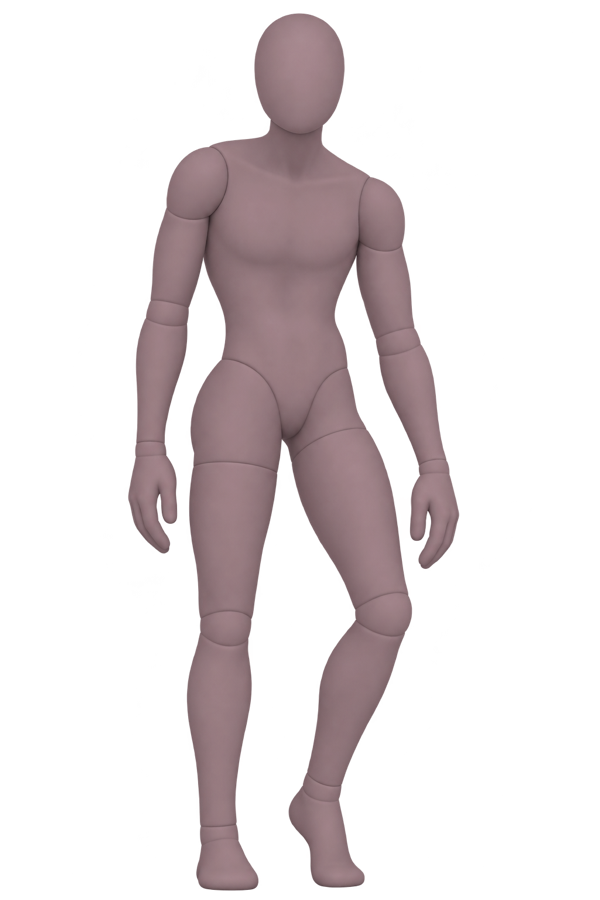
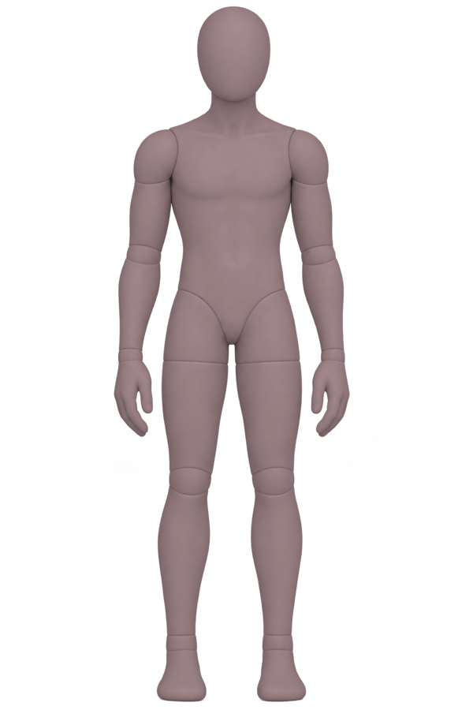

Einstieg
Was dieser Kurs macht.
Dieser Kurs führt in das Singen als musikalische und körperliche Tätigkeit ein. Du lernst grundlegende Stimmtypen und Reichweiten kennen und bekommst ein erstes Modell dafür, wie Atem, Stimmapparat und Mundraum beim Singen zusammenarbeiten.
Unser Ziel ist es eine stabile Note zu produzieren und anhand dieser eine Referenz für weitere Noten zu erzeugen.
Hier siehst du das Gesangscockpit und darauf die Regler, welche du verstehen und bedienen können musst, um eine stabile Note zu produzieren.
Gesangscockpit
Kapitel 01
Haltung
Eine gute Haltung verhindert unnötige Spannungen und erhöht dein Selbstbewusstsein. Beides hilft beim Singen.
Die Haltung ausrichten




-
Füße
Füße schulterbreit, Gewicht gleichmäßig verteilen, Knie locker lassen.
-
Becken
Becken neutral bis leicht nach vorn, ohne Hohlkreuz. Zum Spüren mit beiden Händen sanft gegen eine Wand drücken und weiteratmen.
-
Brustkorb
Richte dich auf, als würde ein Laser vom Solarplexus schräg nach oben zeigen.
-
Schultern
Schultern locker sinken lassen, ohne sie nach vorn zu runden oder nach hinten zu ziehen.
-
Kopf
Eine gedachte Schnur zieht den Scheitel sanft nach oben. Kinn locker, Blick geradeaus.
02 · Ein Lernmodell
Die drei Abteilungen der Gesangsfirma.
Als Denkmodell teilen wir die Arbeit beim Singen in drei Bereiche ein. Sie arbeiten immer gemeinsam; die Abteilungen sind keine voneinander unabhängigen Teile. Jede Abteilung bekommt eine eigene Lektion.
- PumpeRumpf und Beckenboden POWER
- StimmboxHals und Stimmapparat TONHÖHE
- MaskeGesicht und Mund KLANG
Lektion 01 · Abteilung 01
Die Pumpe
Hier erkundest du Atembewegung und die Dosierung des Ausatmens. Zwerchfell, Brustkorb, Bauch- und weitere Atemmuskeln arbeiten dabei zusammen. Der Beckenboden bewegt und koordiniert sich mit der Atmung; er ist aber kein einfacher Regler, der das Zwerchfell direkt steuert.
Beim Singen erzeugt die Atemmuskulatur Druck, während die angenäherten Stimmlippen dem Luftstrom Widerstand entgegensetzen. So baut sich unter den Stimmlippen subglottaler Druck auf. Im Gesangsunterricht nennt man das Zusammenspiel, mit dem du Atemdruck und Luftstrom dosierst, oft Stütze oder Support.
Kontraktion, Entspannung und Expansion
Kontraktion heißt, dass sich ein Muskel zusammenzieht. Spanne den Bizeps sanft an und lass los. Auch beim Sit-up spürst du die Anspannung im Bauch.
Für den Bauch kannst du eine Expansion als sanftes Weiten vorstellen – ähnlich dem „Babybauch“. Beim Beckenboden verwenden wir „Expansion“ als Vorstellung für ein behutsames Loslassen nach unten, wie bei der Bewegungsrichtung beim Stuhlgang. Umgekehrt erinnert eine leichte Beckenboden-Kontraktion an das Zurückhalten von Urin oder Darmgas. Übe diese Wahrnehmungen nur sanft, ohne Pressen, Luftanhalten oder starkes Nach-unten-Drücken; nicht während des Toilettengangs.
Wenn du für einen kräftigeren Ton einmal mehr Atemdruck einsetzen möchtest, kann sich der Rumpf stärker weiten als beabsichtigt. In diesem Lernmodell kannst du dir eine leichte Kontraktion als Schutz vor übermäßiger Expansion vorstellen. Setze sie nur gelegentlich und sparsam ein. Der Luftstrom bleibt dabei frei.
Übung 1 · Beckenboden wahrnehmen
- Spanne den Beckenboden leicht an und lass wieder los. Wiederhole das fünfmal, ohne die Luft anzuhalten.
- Stell dir nun ein sanftes Weiten und anschließendes Loslassen vor. Wiederhole auch das fünfmal, ohne nach unten zu pressen.
- Erkunde fünfmal beides gleichzeitig: eine leichte Beckenboden-Kontraktion und eine sanfte Weitung im Bauch- oder unteren Rippenbereich. Wenn sich das gepresst oder unangenehm anfühlt, lass die Kombination weg und kehre zum entspannten Atmen zurück.
Übung 2 · Luftstrom auf S und F
Stell dir zunächst vor, du singst tief, und forme ohne Ton ein leises S. Nimm eine kleine, bequeme Weitung im Rumpf wahr und halte den Luftstrom fünf Sekunden möglichst gleichmäßig. Verändere den Atem nicht mit Gewalt.
Wiederhole es mit der Vorstellung einer mittleren Lage und einer etwas deutlicheren, aber weiterhin bequemen Atembewegung. Danach kannst du dir eine hohe Lage vorstellen und eine leichte Rumpfstabilität ergänzen. Hals, Brust und Arme bleiben möglichst frei; die Tonhöhe wird hier nur vorgestellt, nicht erzwungen.
Wiederhole die drei Varianten mit einem stimmlosen F-Laut wie in „fff“. Achte darauf, ob sich der Luftstrom ähnlich oder anders anfühlt als beim S.
Luftstrom auf S oder F ansehen
Einzähler · 5/4 1 / 5
Übung 3 · Impulse und Ausschütteln
Sprich P – T – K fünfmal ruhig und klar. Nimm wahr, wie der Rumpf bei den kurzen Impulsen reagiert. Erkunde danach dieselben Impulse mit einer leichten Rumpfstabilität, ohne den Atem festzuhalten. Wiederhole das mit den stimmlosen Lauten F – S – SCH. Schüttle anschließend Arme und Schultern locker aus.
Wichtig: Die Übung soll Wahrnehmung schulen, nicht Kraft oder Druck maximieren. Beende sie bei Schmerz, Schwindel oder unangenehmem Druckgefühl.
Druckerzeugung · Zusammenspiel mit der Stimmbox
Spüre zuerst bei den Übungen mit S und F, wie der Rumpf das Ausatmen trägt, während die Stimmlippen geöffnet bleiben. So lernst du die Arbeit der Pumpe für sich kennen. Den Widerstand durch den Stimmlippenschluss erkundest du danach in der Stimmbox.
Wenn du beides kurz verbindest, kannst du wahrnehmen, wie sich der Druck unter den Stimmlippen aufbaut und beim Öffnen wieder nachlässt. Zur Übung „Druck wahrnehmen und lösen“ ↓
Lektion 02 · Abteilung 02
Hals und Stimmapparat.
Der Hals und der Stimmapparat helfen dir, Tonhöhen zu erzeugen und zu treffen. Im Kehlkopf liegen die Stimmlippen. Die ausströmende Luft versetzt sie in Schwingung; dadurch entsteht der stimmhafte Grundklang. Veränderungen ihrer Spannung, Länge und Schwingungsweise ermöglichen unterschiedliche Tonhöhen.
Der Stimmapparat arbeitet mit dem Rumpf und dem Beckenboden zusammen: Die Atembewegung liefert den Luftstrom und unterstützt den Klang; die Stimmlippen schwingen und regulieren den Luftstrom; Mund und Rachen formen anschließend den Klang weiter. Der Hals soll dabei nicht durch Pressen den Atemdruck erzeugen.

Erkundung · Was kannst du schon?
Erkunde die Unterschiede leise, ohne Kraft und in bequemer Lage. Bei Schmerz, Kratzen oder Pressen pausiere und kehre zurück zu deiner bequemen Sprechstimme.
1 · Freien Luftstrom wahrnehmen
- Atme ein paarmal ruhig ein und aus. Lass den Atem gleichmäßig und so tief fließen, wie es sich angenehm anfühlt.
- Lass beim Ausatmen den Mund locker geöffnet. Spüre, wie die Luft frei herausströmt, ohne dass du im Hals oder Rumpf spürbar Druck aufbaust oder presst.
Im Gesangscockpit entspricht das der Seite „100 % Luftstrom“. Gemeint ist freies Ausatmen mit kaum spürbarem Druck. Ein Ton entsteht so nicht.
Gesangscockpit
Die letzte Übung hat zwei Regler berührt: Luftstrom und Lautstärke. Die Anzeige unten zeigt deinen Atemzyklus. Für einen Ton brauchen wir Luftdruck. In den nächsten drei Übungen lernst du, die Stimmlippen zu spüren und darunter Druck aufzubauen. Damit kannst du Luftstrom und Lautstärke gezielt steuern.
Stimmlippenschluss im Alltag erkennen

- Sag leise „Oh-oh!“ und achte auf den kurzen Stopp zwischen den Silben. Dieser kurze Stimmlippenschluss heißt Glottisschlag.
- Halte den Atem für einen Moment sanft an. Mund und Nase bleiben frei.
- Erinnere dich an den Moment unmittelbar vor einem Husten. Lass den Husten dabei aus.
- Stell dir vor, du hebst etwas Schweres oder stößt dir den Zeh und hältst vor Schreck kurz die Luft an. Beim schweren Heben können sich zusätzlich die Taschenfalten schließen. Beide Beispiele dienen als Vorstellung.
Übe mit dem leisen „Oh-oh“ oder dem sanften Atemstopp. Lass die Taschenfalten dabei locker und versuche nicht, sie bewusst zu schließen.
Praktische Übung · Widerstand kennenlernen
- Öffnung. Atme bei geöffnetem Mund entspannt ein und aus.
- Verschluss. Halte die Luft im Hals kurz und sanft an. Lass Mund und Nase dabei frei.
- Wechsel. Wechsle ein paarmal zwischen freiem Atmen und diesem kurzen Verschluss. Spüre, wie der Verschluss den Luftstrom unterbricht. Atme dazwischen normal weiter.
Praktische Übung · Druck wahrnehmen und lösen
- Druck. Wenn der Wechsel leicht gelingt, schließe die Stimmlippen kurz und gib aus dem Rumpf einen ganz kleinen Ausatemimpuls. Nimm den leichten Druck unter den Stimmlippen wahr.
- Entlastung. Öffne die Stimmlippen gleich wieder und lass die Luft ruhig entweichen.
Lernziel. Spüre, wie die Pumpe den Ausatemdruck erzeugt und die Stimmbox den Widerstand bereitstellt. Erkunde beide Bewegungen erst einzeln und dann gemeinsam. Sobald du merkst, dass du presst oder der Hals eng wird, lass los und atme ruhig weiter.
2 · Weicher Stimmlippenschluss
Beginne mit einem sanften, gehauchten „haa“: Erst hörst du den Luftstrom, dann kommt ganz leicht ein bequemer Ton hinzu. Die Stimmlippen gehen dabei allmählich in die Schwingung über. Lass den Ton ohne Stoß entstehen. Wiederhole das mit A, E, I, O, U. Du kannst auch die Vokale flüstern und anschließend mit Stimme singen, um den Unterschied wahrzunehmen.
3 · Deutlicher Stimmlippenschluss
Für den Gegensatz singe ein kurzes, leichtes A und beende es direkt wieder – wie einen kleinen Staccato-Ton. Die Stimmlippen schließen klar für den Toneinsatz. Das soll nicht hartes Pressen bedeuten: Hals und Kiefer bleiben locker, und du stößt die Luft nicht heraus. Wenn es angenehm gelingt, probiere dieselbe kurze Tonform mit E, I, O, U.
4 · Vokale vergleichen
Vergleiche jeden Vokal einmal mit weichem und einmal mit klarem, kurzem Stimmeinsatz. Achte darauf, wie sich der Beginn anhört und anfühlt. Wähle eine bequeme Tonhöhe und geringe Lautstärke. Es gibt hier keinen Klang, der „besser“ sein muss.
5 · Vocal Fry entdecken
Sprich in deiner bequemen Sprechstimme und gleite am Satzende sanft nach unten. Wenn dabei in einer sehr tiefen Lage ein leises, knarrendes oder knisterndes Geräusch auftaucht, hast du möglicherweise Vocal Fry gefunden. Erkunde es nur kurz und locker. Versuche nicht, es durch Druck oder extremes Tiefersingen zu erzwingen.
6 · Lip Rolls kennenlernen
Lass die Lippen locker vibrieren wie bei einem entspannten „brrr“. Wenn das leicht gelingt, halte den Lippen-Triller auf einem bequemen Ton und gleite anschließend nur ein kleines Stück höher und tiefer. Die Lippen bleiben weich; falls der Triller nicht kommt, pausiere und probiere es später erneut, ohne mehr Druck zu machen.
Zum Abschluss: Welche Stimmeinsätze, Vokale und Übungen kannst du schon bequem ausführen? Notiere kurz, was leicht gelingt und was du später noch einmal erkunden möchtest. Diese Bestandsaufnahme ist kein Leistungstest.
Lektion 03 · Abteilung 03
Maske, Gesicht und Mund.
Lippen, Zunge, Kiefer, Gaumen und Rachenraum formen Vokale und Konsonanten. Sie verändern außerdem, welche Obertöne besonders hörbar werden und wie der Klang nach außen wirkt.
„Stimmsitz“ beschreibt eine Klangempfindung, etwa ein Vibrieren im Gesicht. Sie kann dir beim Wahrnehmen und Formen des Klangs helfen. Der hörbare Klang entsteht durch die Form des gesamten Vokaltrakts.
Zum Erkunden: Sprich langsam „ma – mi – mu“ und achte darauf, wie Lippen, Zunge und Kiefer die Form des Klangs verändern. Bleib dabei locker.
Maske – Warm-up (2–3 Minuten)
1. Vokalwechsel – A E I O U
Ziel: Artikulation und Klangformung kontrollieren.
- Einen bequemen Ton halten.
- Langsam durch alle fünf Vokale wechseln.
- Tonhöhe und Lautstärke konstant halten.
- Veränderungen von Zunge, Lippen, Kiefer und Klang wahrnehmen.
2. Mmm → A (Resonanz)
Ziel: Resonanzveränderungen wahrnehmen.
- Auf „Mmm“ einen angenehmen Ton summen.
- Langsam den Mund zu „A“ öffnen.
- Tonhöhe und Lautstärke möglichst beibehalten.
- Veränderungen der Vibrationen und Klangfarbe beobachten.
3. NG → A (Zungenposition)
Ziel: Zungenposition und Klangveränderungen koordinieren.
- „NG“ wie am Ende von „sing“ erzeugen.
- Auf derselben Tonhöhe zu „A“ wechseln.
- Bewegung der Zunge und Veränderung der Resonanz wahrnehmen.
- Rachen und Kiefer locker lassen.
Zungenbewegung von NG zu A ansehen
Die drei Bereiche hängen zusammen: Atembewegung und Luftdruck unterstützen die Schwingung, die Stimmlippen erzeugen den Ton, und der Vokaltrakt formt seinen Klang. Eine Veränderung in einem Bereich kann die anderen mitbeeinflussen. Erkunde das schrittweise und angenehm.
Kapitel 03
Das Warmup
Verbinde drei Übungen aus Kapitel 2 zu einem kurzen Warmup. Beginne mit dem Atem, nimm dann die Stimme dazu und forme zum Schluss den Klang.
Atem und Luftstrom
Atme bequem ein und lass die Luft auf einem leisen S ausströmen. Wiederhole es mit F. Halte den Luftstrom etwa fünf Sekunden gleichmäßig.
Stimme und Lippen-Triller
Lass die Lippen auf einem bequemen Ton locker vibrieren, wie bei einem leisen „brrr“. Wenn das leicht gelingt, gleite ein kleines Stück höher und tiefer.
Klang mit „ma – mi – mu“ formen
Sprich langsam ma – mi – mu. Spüre, wie sich Lippen, Zunge und Kiefer von Vokal zu Vokal bewegen.
Bilder zum Erkunden
Anatomie-Galerie.
Die Abbildungen ergänzen das Drei-Abteilungen-Modell. Einige sind historische Lehrtafeln, andere moderne Schemata. Nutze sie, um die Lage und das Zusammenspiel grob zu erkennen; sie ersetzen keine detaillierte Anatomielehre.
01 · Rumpf, Atemwege und Beckenboden
Vom Atemsystem und Zwerchfell bis zum Beckenboden.


02 · Hals und Stimmapparat
Kehlkopf, Stimmlippen und die Schwingung, aus der stimmhafter Klang entsteht.

03 · Kopf, Mund und Vokaltrakt
Der Vokaltrakt formt Vokale und beeinflusst die Klangfarbe.


02 · Stimme und Lage
Stimmtypen und Reichweiten.
In Chören und besonders in der klassischen Musik werden Stimmen oft nach ihrer Lage eingeteilt. Die geläufigen Bezeichnungen sind Sopran, Mezzosopran und Alt beziehungsweise Kontraalt sowie Tenor, Bariton und Bass. Countertenor bezeichnet meist eine hohe Männerstimme, die überwiegend mit einer besonderen Registerkoordination singt.
Die folgenden Töne sind nur grobe Orientierungsbereiche, keine Grenzen und kein Test. Die tatsächliche Einteilung berücksichtigt auch, wo eine Stimme längere Zeit bequem klingt (die Tessitur), ihre Klangfarbe und die Übergänge zwischen Registern.
Grobe Orientierungsbereiche
Sopran
C4–A5
Mezzosopran
A3–F5
Alt / Kontraalt
F3–D5
Tenor
B2–G4
Bariton
G2–E4
Bass
E2–C4
Die Grenzen unterscheiden sich je nach Quelle, Stil und Ausbildung. Ein Countertenor lässt sich nicht durch einen einzigen festen Bereich beschreiben.
Ein großer Tonumfang allein bestimmt deinen Stimmtyp nicht. Eine Stimme darf sich entwickeln und kann sich je nach Musikstil unterschiedlich anfühlen. Singe hohe und tiefe Töne nur, solange sie bequem bleiben; du musst keine Randtöne erreichen, um gut singen zu können.
Weiterlernen
Verwandte Kurse.
Für die Stimme gibt es einen eigenen Intonationskurs. Ergänzend kannst du im Gehörbildungskurs dein Hören trainieren – zum Beispiel Tonhöhen vergleichen und Melodien nachsingen.